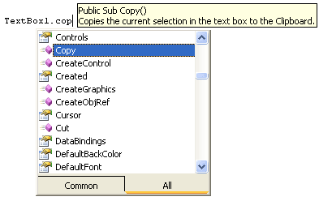
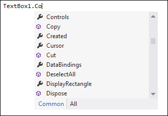
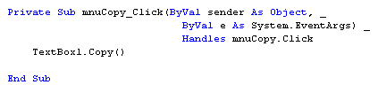
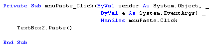

Cut, Copy, Paste and Undo in VB .NET
This tutorial is part of an ongoing lesson. Click here for the first part.
If you haven't already, add two textboxes to your form and set their MultiLine property to True. What we'll do now is to get the following menu items to work: Undo, Cut, Copy and Paste. We'll start with Copying:
The Copy Menu
If you type Textbox1 in your code window, then a full stop, you get a list of properties and methods available to the textbox. Scroll up to the top and locate the Copy method:


Notice the tool tip in yellow in the 2010 version. It's telling you what this method does - copies the current selection to the clipboard. The clipboard is a temporary storage area available to most Windows applications. When you invoke the Copy method of the textbox, any selected text is place in this temporary storage area for you. You don't have to write any other code.
So access the code for your Copy menu item, and add this line to it:
Textbox1.Copy()
Your code window should look something like this:

That's all there is for the copy menu! But nothing visible will happen when you run your code. Let's paste it into the second textbox.
No more reading these lessons online - get the eBook here!
The Paste Menu
Again, there's only one line of code to write. It's this:
TextBox2.Paste()
Notice that we're saying paste to textbox2. Because the copy menu places the text from textbox one onto the clipboard, you only need this one line of code. You're saying "Whatever is on the Clipboard, paste it into Textbox2".
So add that line to your Paste menu item. Your code window should look like this:

Time to test it out. Run your programme. Select all the text in textbox one (it might already be selected), then click Edit > Copy from your menu.
Click inside the second textbox. Then click Edit > Paste from your menu. The text should appear in textbox two.
The Cut Menu
Access the code for you Cut menu item. Add the following code to it:
TextBox1.Cut()
Run your programme, and select the text in textbox one. From your menu, click Edit > Cut. The text should disappear (it's on the clipboard, though). Click inside textbox two, and click Edit > Paste. The text should be pasted over.
The Undo Menu
For the Undo menu, add this line of code:
TextBox1.Undo()
Run your programme. Then select the text in textbox one. Click Edit > Cut and the text disappears. Now click Edit > Undo. The text reappears.
The Edit menu we implemented is only a simple one. But it does demonstrate what you can do with VB.NET and menus.
We'll complete out look at menus by coding for the View menu you added to your form. In the process, we'll take a look at pictures boxes, as well as seeing how easy it is to hide and disable controls on a form.